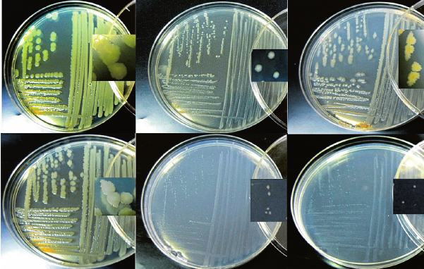
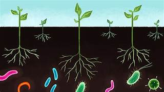
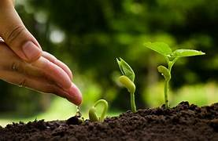
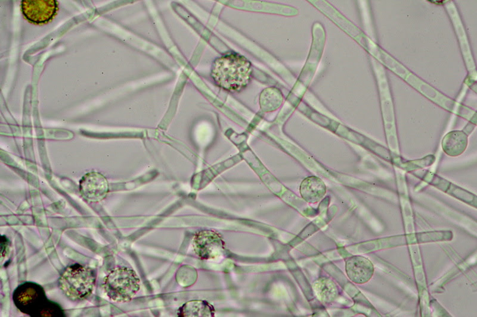
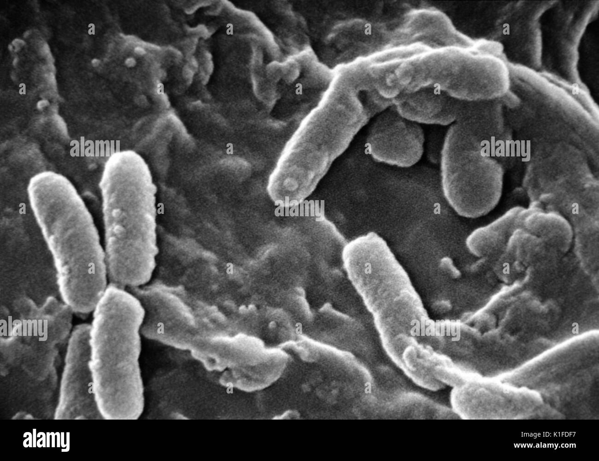
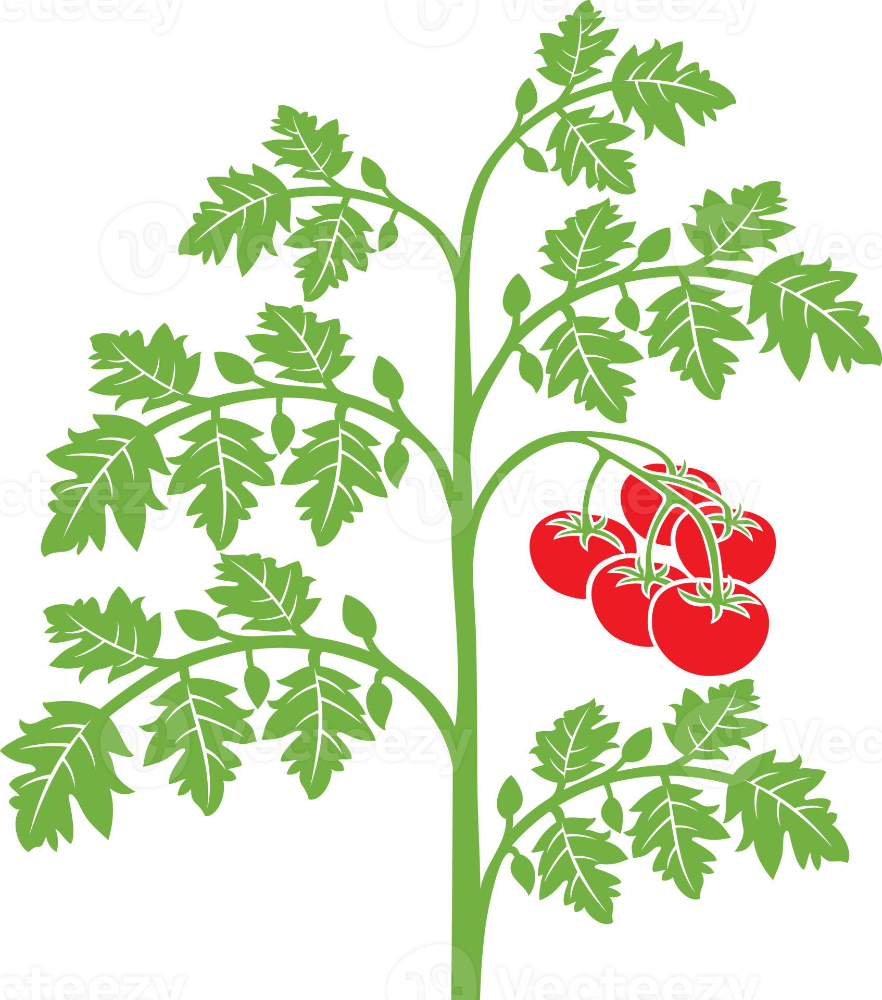

“Inmovilización celular de microorganismos promoteres del crecimiento vegetal”
“El uso de microorganismos dentro de la agricultura puede ser una alternativa biotecnológica atractiva para aumentar el rendimiento de los cultivos, mejorar y restaurar la fertilidad del suelo, estimular el crecimiento de las plantas y, sobre todo, reducir los costos de producción e impactos ambientales asociados a la fertilización química”
“Trichoderma harzianum, Psuedomona putida, Stenotrophomonas rhizophila, cinética de liberación”
Uso de microorganismos en la agricultura
Los microorganismos promotores del crecimiento vegetal son microorganismos no patógenos, que se encuentran en diferentes hábitats y se ha demostrado continuamente que la asociación con sus huéspedes es altamente beneficiosa para las plantas, esto debido a que mejora su desarrollo y activa sus mecanismos de defensa contra agentes fitopatógenos invasores. Son organismos saprófitos y de origen natural, por lo que, ayudan a mantener la fertilidad del suelo y a su vez, aumenta el crecimiento de las plantas e induce una respuesta de defensa contra las infecciones por patógenos (Jones 2016). Por otro lado, las bacterias promotoras del crecimiento vegetal son un grupo de microorganismos benéficos que están distribuidos ampliamente en las raíces o en el suelo de la rizosfera, de las plantas y están directamente relacionados con el metabolismo de las raíces de las plantas hospedantes estas ejercen un efecto benéfico directo e indirecto en el desarrollo vegetativo, se relacionan de manera directa, ya que, sintetizan las fitohormonas, las vitaminas, ayudan a estimular la germinación de semillas, la emergencia de la plántula, así como a inhibir la síntesis de etileno y contribuyen a solubilizar el fósforo inorgánico (Iheagwara et al. 2012). El efecto benéfico de acción indirecto consta de la competencia de nutrientes, síntesis de antibióticos y fungicidas, induce a la resistencia sistémica contra agentes patógenos, la producción de sideróforos, también funcionan como agentes de control biológico, protegiendo a las plantas de posibles infecciones causadas por fitopatógenos (Ooms 2023).

The use of beneficial microorganisms in agriculture is one of the most promising alternatives to contribute to the solution of the main problems of crops of agri-food importance such as tomatoes. But this technology still has deficiencies in the formulation and application of these bioinoculants. Therefore, the objective of this research is to evaluate the effect of the physical form of microbial bioinoculants on their survival and controlled release in the inoculation of tomato seedlings. The application of Trichoderma harzianum, Pseudomona putida and Stenotrophomonas rhizophila will be evaluated in three physical forms: liquid suspension, microcapsules and nanoemulsion. Morphological parameters of tomato seedlings will be determined: plant height, root length and volume, dry and fresh weight of foliage and root, and stem thickness. The interaction mechanisms will be evaluated with a qualitative method (solubilization of N and P) and quantitative methods (IAA production, siderophore quantification and CFU counting). A controlled release kinetics study of micro- and nanoencapsulated microorganisms will be carried out. The experimental design will be a completely randomized factorial design with 10 treatments and 10 replications each. An ANOVA and a Tukey comparison of means will be carried out with an α = 0.05, using the Minitab statistical software for Windows version 2020.
El uso de microorganismos benéficos en la agricultura es una de las alternativas más prometedoras para contribuir a la solución de las principales problemáticas de cultivos de importancia agroalimentaria como el tomate. Pero esta tecnología aún presenta deficiencias en la formulación y aplicación de estos bioinoculantes. Por esto, el objetivo de esta investigación es evaluar el efecto de la forma física de bioinoculantes microbianos en su supervivencia y liberación controlada en la inoculación de plántulas de tomate. Se evaluará la aplicación de Trichoderma harzianum, Pseudomona putida y Stenotrophomonas rhizophila, en tres formas físicas: suspensión líquida, microcápsulas y nanoemulsión. Se determinarán parámetros morfológicos de las plántulas de tomate: altura de planta, longitud y volumen radical, peso seco y fresco de follaje y raíz, y grosor de tallo. Se evaluarán los mecanismos de interacción con método cualitativo (solubilización de N y P) y métodos cuantitativos (producción de AIA, cuantificación de sideróforos y conteo de UFC). Se realizará un estudio de cinética de liberación controlada de los microorganismos micro y nanoencápsulados. El diseño experimental será un diseño factorial completamente al azar con 10 tratamientos y 10 réplicas cada uno. Se realizará un ANOVA y una comparación de medias Tukey con un α= 0.05, utilizando el software estadístico Minitab para Windows versión 2020.

Entre 1900 y 2022 la población mundial se ha cuadriplicado, alcanzando un aproximado de 8,000 millones de personas, por lo que se estima un aumento a 10,000 millones de habitantes para el 2050 (Li et al. 2023). Los sistemas de producción de alimentos existentes serán insuficientes para hacer frente a este aumento demográfico. En consecuencia, la agricultura tiene la necesidad de ser más eficiente para mejorar su competitividad, reducir sus costos de producción y adaptarse a la volatilidad del mercado (Onodera y Kirisawa 2023). Una de las alternativas más prometedoras y estudiada es el uso de microorganismos benéficos en el sector agrícola(Villalpando-Aguilar et al. 2022). Los biofertilizantes pueden ser alternativas biotecnológicas atractivas para aumentar el rendimiento de los cultivos, mejorar y restaurar la fertilidad del suelo, estimular el crecimiento de las plantas y, sobre todo, reducir los costos de producción e impactos ambientales asociados a la fertilización química (Endo et al. 2024). Las interacciones beneficiosas de estos microorganismos con las plantas incluyen el suministro de nutrientes a los cultivos, la estimulación del crecimiento de las plantas, la producción de fitohormonas, el biocontrol de fitopatógenos, la mejora de la estructura del suelo, la bioacumulación de compuestos inorgánicos y la biorremediación de suelos contaminados con metales (Chojnacka, Moustakas, y Mikulewicz 2023). Por esto, el uso de microorganismos benéficos en la agricultura ha sido evaluado en una amplia variedad de cultivos, incluyendo los de mayor importancia a nivel mundial como, el arroz, trigo, maíz y papa, entre otros (Vanhaelewyn et al. 2020).

Hongos benéficos
Los hongos promotores del crecimiento vegetal son microorganismos no patógenos, que se encuentran en diferentes hábitats y se ha demostrado continuamente que la asociación con sus huéspedes es altamente beneficiosa para las plantas (Lu et al. 2019), esto debido a que mejora su desarrollo y activa sus mecanismos de defensa contra agentes fitopatógenos invasores (Rodríguez-González et al. 2020). Son organismos saprófitos y de origen natural, por lo que, ayudan a mantener la fertilidad del suelo y a su vez, aumenta el crecimiento de las plantas e induce una respuesta de defensa contra las infecciones por patógenos (Fasciana et al. 2023).
Los hongos promotores del crecimiento vegetal tienen ciertos beneficios como:
Incrementan la superficie de absorción de agua y nutrientes que se absorbe por los pelos radicales.
El incremento de la vida útil de las raíces absorbentes, mejora la absorción iónica y acumulación de nutrientes
Solubilización de fósforo y de minerales que se encuentran en el suelo (Etesami y Maheshwari 2018).
Estos microorganismos aumentan la capacidad fotosintética de la planta, aumentan la producción de biomasa, su resistencia a infecciones causadas por fitopatógenos, y el incremento de su tolerancia a toxinas orgánicas e inorgánicas presentes en el suelo.
También protegen a las plantas contra valores extremos de acidez del suelo y ayudan a la disminución del estrés causado por factores ambientales (Knapp, McNeill, y Turland 2011).

Bacterias benéficas
Las bacterias promotoras del crecimiento vegetal son un grupo de microorganismos benéficos que están distribuidos ampliamente en las raíces o en el suelo de la rizosfera de las plantas (Marrero et al. 2015) y están directamente relacionados con el metabolismo de las raíces de las plantas hospedantes (Aviles-Garcia et al. 2016). Estas ejercen un efecto directo e indirecto en el desarrollo vegetativo. Se relacionan de manera directa, ya que
Sintetizan las fitohormonas, las vitaminas, ayudan a estimular la germinación de semillas (Rojas-Rojas et al. 2019), la emergencia de la plántula, así como a
Inhibir la síntesis de etileno y contribuyen a solubilizar el fósforo inorgánico (Laranjo-González et al. 2017).
El efecto benéfico de acción indirecto consta de la competencia de nutrientes, síntesis de antibióticos y fungicidas.
Induce a la resistencia sistémica contra agentes patógenos
La producción de sideróforos, también funcionan como agentes de control biológico, protegiendo a las plantas de posibles infecciones causadas por fitopatógenos (Vandegrift et al. 2023).
En la agricultura, las bacterias benéficas estimulan el crecimiento vegetativo, debido a que producen diferentes tipos de hormonas y metabolitos, mejoran la solubilización de minerales presentes en el suelo, ayudan a la fijación de nitrógeno e incrementan la protección contra agentes fitopatógenos (Henao-Rojas et al. 2022). Esto último se debe principalmente por la producción de compuestos antibióticos que crean un efecto antagónico contra bacterias y hongos patógenas durante su interacción en la rizosfera (Formighieri y Melis 2018). Además, inducen a las plantas a mejorar su resistencia al estrés biótico o abiótico (Grimaud et al. 2018) y son de gran importancia en el ciclo biogeoquímico de los elementos y la remediación del suelo (Radder et al. 2020).

Solanum lycopersicum L.
El tomate pertenece a la familia de las Solanaceae. Es una planta dicotiledónea, herbácea y de ciclo anual. La estructura de interés es el fruto, el cual posee diferentes formas, tamaños, sabores y colores (Brown et al. 2000). Esta especie que se encuentra presente en una amplia variedad de hábitats (Qi et al. 2021). A nivel mundial el tomate a es uno de los cultivos de mayor importancia por su extensión, demanda y formas de consumo. Es una de las hortalizas más difundidas debido a su valor económico y propiedades nutricionales (Madrid-Espinoza, Salinas-Cornejo, y Ruiz-Lara 2019). Ocupa una producción global de más de 186 millones de toneladas métricas, en una superficie de 5 millones de hectáreas y un rendimiento promedio de 36 ton/ha (Madrid-Espinoza, Salinas-Cornejo, y Ruiz-Lara 2019). Actualmente su demanda aumenta incesantemente debido a que sus frutos poseen un importante contenido de antioxidantes, de vitaminas A, C y E, β-caroteno y licopeno, otros carotenoides como criptoxantina, caroteno, fitoeno y fitofloeno (Shinozaki et al. 2015), así como una fuente rica en minerales como el calcio y contienen antioxidantes como el licopeno y glutatión (Van Eck, Kirk, y Walmsley, s. f.) que resultan beneficiosos para la salud humana y permiten al organismo prevenir enfermedades carcinogénicas y cardiovasculares (Adisa et al. 2020). Este cultivo es una de las hortalizas más consumidas en el mundo no solo por su calidad nutricional y organoléptica, sino también por su agradable sabor (Adisa et al. 2020). En México Las principales entidades federativas con mayor producción fueron:Sinaloa con 677,612 ton, San Luis Potosí con 440,875 ton, Michoacán con 283,259 ton, Jalisco con 197,679 ton y Baja California Sur con 173, 540 ton (Sbaihat et al. 2015).

Se empleará un diseño factorial completamente al azar con 10 tratamientos y 10 réplicas cada uno. Los datos serán procesados mediante un análisis de varianza (ANOVA), y una comparación de medias de Tukey (α = 0.05) en el software estadístico Minitab para Windows, versión 2020.